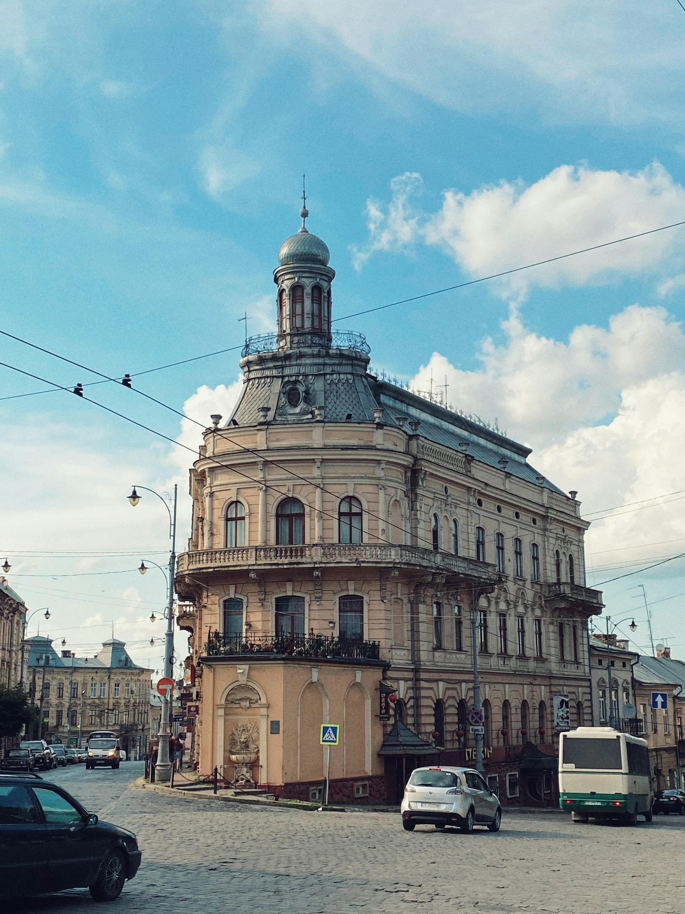
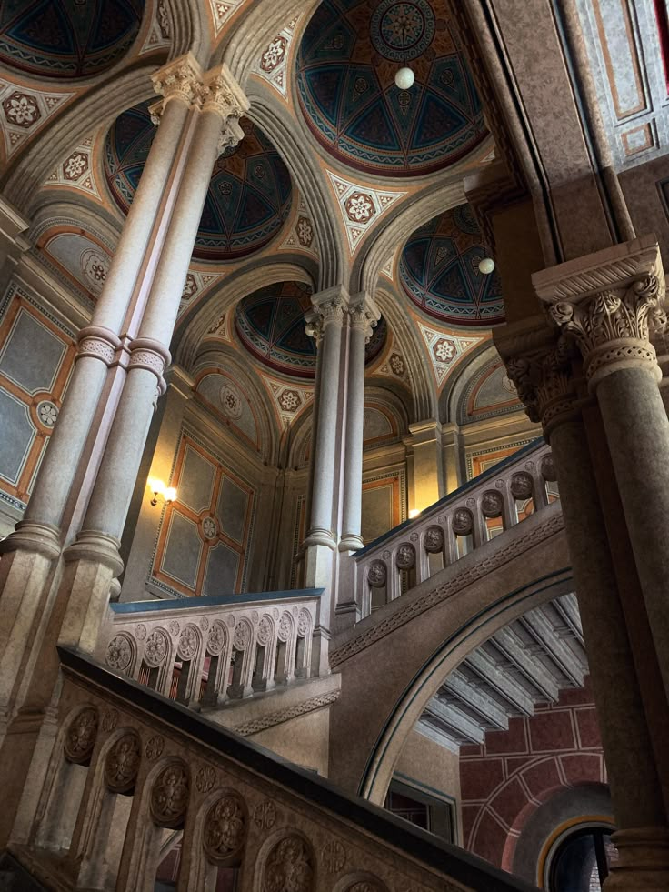

Чернівці
Чернівці — місто, де історія не застигла в камені, а продовжує жити у ритмі сучасності. Вузькі вулички, старовинні фасади та затишні площі створюють атмосферу, що поєднує європейську вишуканість із буковинською гостинністю.

Чернівці — місто, де історія не застигла в камені, а продовжує жити у ритмі сучасності. Вузькі вулички, старовинні фасади та затишні площі створюють атмосферу, що поєднує європейську вишуканість із буковинською гостинністю.
Перші згадки про місто сягають середньовіччя, коли воно було важливим торговельним осередком на шляхах між Сходом і Заходом. Згодом Чернівці увійшли до складу Молдавського князівства, а наприкінці XVIII століття опинилися під владою Австрійської імперії. Саме цей період став часом стрімкого розвитку: місто набуло європейського вигляду, збагатилося величною архітектурою, новими навчальними закладами, театрами та громадськими просторами.
У XIX столітті Чернівці перетворилися на один із найважливіших культурних центрів регіону. Тут мирно співіснували українці, румуни, німці, євреї, поляки та представники багатьох інших народів, створюючи унікальне багатокультурне середовище. Саме ця різноманітність сформувала особливий дух міста, який і сьогодні відчувається в його традиціях, мистецтві та архітектурній спадщині.
